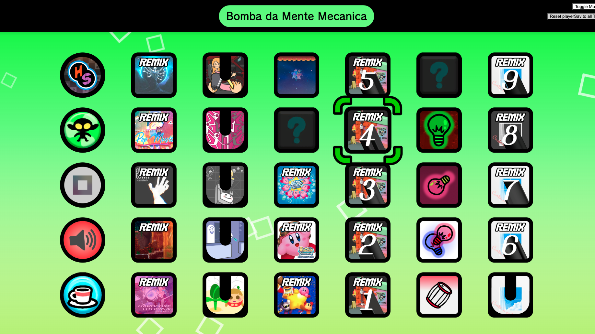
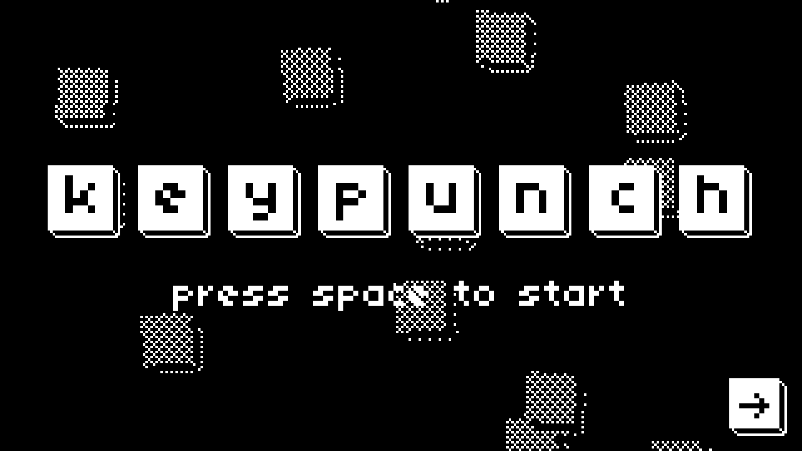
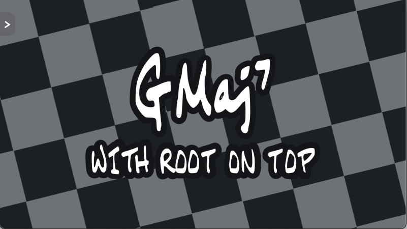
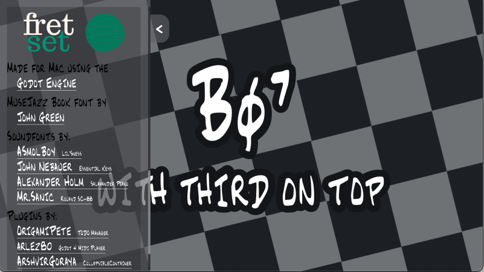
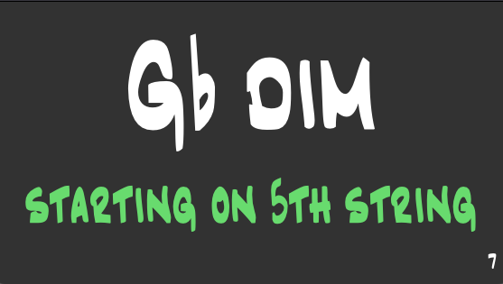
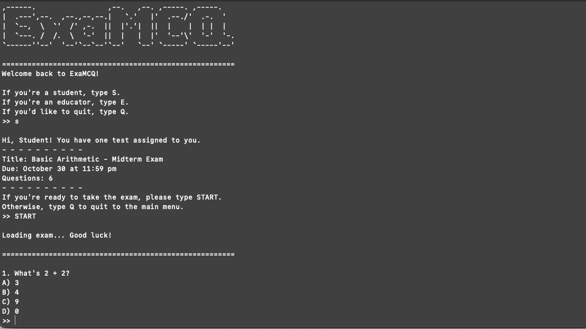

Over time, I've programmed lots of projects to learn and practice programming. After all, the fastest way to learn something is through hands-on experience, in my opinion. Unfortunately, none of these are released, nor am I continuing to work on any of them at the moment (except for one!). Step into the graveyard of my programming project journey.
Language experience:
- GDScript
- Python
- Java
- HTML
- CSS
- JavaScript
Rhythm Heaven University
HTML, CSS, JS
To accompany a fangame I was making for the rhythm game series Rhythm Heaven, I created a website to serve as the main menu for downloading level files. While it was eventually cancelled due to copyright fears, I kept all the project files! At the end of the day, it was a fun project where I got to learn the basics of HTML, CSS, and JS, as well as how all 3 can combine to create an interactive website.
Keypunch
Godot (GDScript)
This was my first ever game made in the Godot game engine! The premise is to press each set of keys displayed on the on-screen keyboard to increase your time remaining. I've stopped working on it because the game loop itself was sort of one-note, but I really like the 1-bit art direction (which I'll probably reuse for some other future project!) and the overall game feel. Also, though it's not the one showed in the image, I created my own font that could be unlocked as a cosmetic option.
Fretset
Godot (GDScript)
 It turns out that Godot has a very robust UI system akin to HTML that can be used alone to create an application. I used Godot to create an app to practice drop-2 chord voicings on guitar. It came in handy when I was practicing for my Applied Jazz jury performance! In this project, I got to learn more about UI design and MIDI integration in Godot.
Fretset Mini
Python
Python was the first programming language I ever learned, so I prefer using it (or GDScript, with its similar but UI-oriented syntax) to prototype quick ideas. This version actually came after the original Fretset, but has less features since it focuses on drilling triad arpeggios rather than chord voicings. However, that didn't stop me from adding one feature I never got around to adding to the original Fretset: a score counter that counts how many arpeggios you've played.
exaMCQ
Java
Reject front-end. Return to command line. This project was my midterm for my Intro to Java Programming class. Educator can view, add, edit, or remove multiple-choice questions to an exam, and students can take that exam and receive a score. There are obviously many limitations like the lack of saving and loading progress between sessions, but I thought it was a pretty successful midterm all in all.
untitled card game
Godot (GDScript)

Inspired by Dominion, Machi Koro, Rook, and Balatro, this card game is currently being worked on! With the intent to be, like, released! The goal is to choose which cards to play and buy to maximize your coins and beat your opponents. I still have a long ways to go before I can even get to a full minimum-viable project, but it's been super fun to work on this thing! Look out for it online when it drops in like 10 years ;)